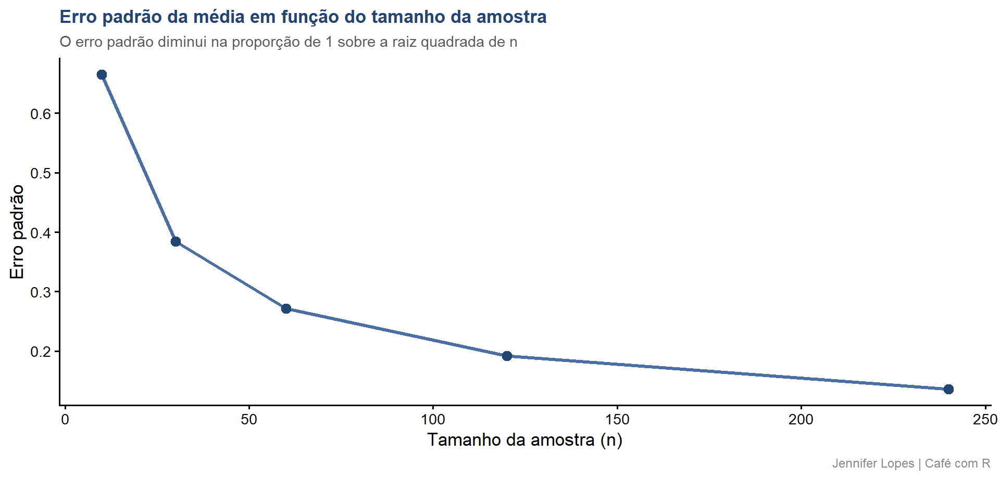
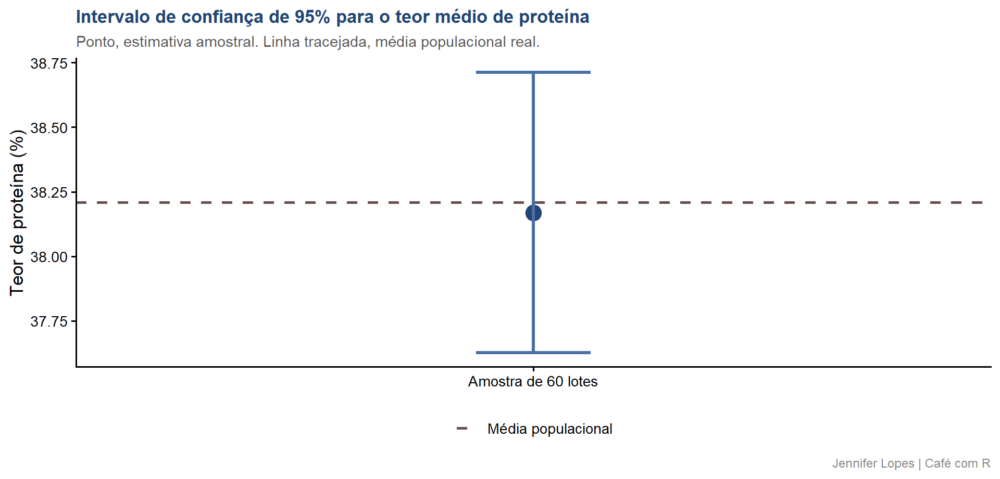

populacao_soja <- tibble(
lote = 1:8000,
proteina = rnorm(8000, mean = 38.2, sd = 2.10))
amostra_soja <- populacao_soja |> slice_sample(n = 60)
bind_rows(
populacao_soja |> summarise(conjunto = "População", n = n(),
media = mean(proteina), dp = sd(proteina)),
amostra_soja |> summarise(conjunto = "Amostra", n = n(),
media = mean(proteina), dp = sd(proteina))) |>
mutate(across(where(is.numeric), ~ round(.x, 3)))Aula 34. Amostra, erro padrão e intervalo de confiança
Os três conceitos que todo aluno tem dúvida, da amostragem à margem de erro, sem misturar desvio padrão com erro padrão
Acompanhe o Café com R
SITE OFICIAL > https://jenniferlopes.github.io/meu_site/
Objetivos da aula
- Distinguir população e amostra, e reconhecer a diferença entre parâmetro e estatística
- Calcular o erro padrão da média e entender o que ele representa
- Calcular e interpretar corretamente um intervalo de confiança para a média
- Identificar a distinção entre desvio padrão e erro padrão, a confusão mais frequente nesse tema
- Reconhecer os erros de interpretação mais comuns envolvendo essas três medidas
Bloco 1
População, Amostra e Inferência
População: definição
A população é o conjunto completo de unidades sobre as quais se deseja alguma conclusão.
Seus valores numéricos são chamados parâmetros, representados por letras gregas, como \(\mu\) (média populacional) e \(\sigma\) (desvio padrão populacional).
No contexto deste estudo: a população é formada por 8.000 lotes de armazenamento de uma cooperativa, e o parâmetro de interesse é o teor médio de proteína nesses lotes.
Important
Atenção: na prática, a população raramente é medida por completo. O parâmetro é, na maioria dos casos, um valor desconhecido que a inferência busca estimar.
Amostra: definição
A amostra é um subconjunto da população, selecionado para representar o todo sem a necessidade de medir cada unidade.
Seus valores numéricos são chamados estatísticas, representados por letras latinas, como \(\bar{x}\) (média amostral) e \(s\) (desvio padrão amostral).
No contexto deste estudo: a amostra é composta por 60 lotes selecionados aleatoriamente entre os 8.000, e a estatística de interesse é o teor médio de proteína nesses 60 lotes.
A validade da inferência depende diretamente do processo de amostragem. Uma amostra selecionada por conveniência não permite generalização para a população.
Parâmetro x estatística
| Elemento | População | Amostra |
|---|---|---|
| Nome | Parâmetro | Estatística |
| Notação | Letra grega | Letra latina |
| Média | \(\mu\) | \(\bar{x}\) |
| Desvio padrão | \(\sigma\) | \(s\) |
| Valor | Geralmente desconhecido | Calculado a partir dos dados |
| Função no R | Não se aplica | mean(), sd() |
Código: população e amostra
Output: comparação população x amostra
# A tibble: 2 × 4
conjunto n media dp
<chr> <dbl> <dbl> <dbl>
1 População 8000 38.2 2.10
2 Amostra 60 38.2 2.10- A média amostral se aproxima da média populacional, mas não coincide exatamente com ela. Essa diferença entre estatística e parâmetro é o que a inferência estatística busca quantificar.
Bloco 2
Erro Padrão da Média
Distribuição amostral da média
Se retirássemos repetidamente amostras de 60 lotes dessa mesma população, cada amostra produziria uma média ligeiramente diferente.
O conjunto de todas essas médias possíveis forma a distribuição amostral da média.
Pelo teorema central do limite, essa distribuição se aproxima de uma distribuição normal à medida que o tamanho da amostra aumenta, mesmo que a variável original não seja normal.
O erro padrão descreve a dispersão dessa distribuição amostral, e não a dispersão dos dados individuais.
Erro padrão: definição e fórmula
\[EP = \frac{s}{\sqrt{n}}\]
O erro padrão mede a precisão da média amostral como estimativa da média populacional.
Diferente do desvio padrão, que descreve a variabilidade entre as observações individuais, o erro padrão descreve a variabilidade esperada entre médias de amostras diferentes.
Important
Atenção: desvio padrão e erro padrão respondem perguntas diferentes. O desvio padrão descreve os dados. O erro padrão descreve a precisão da estimativa da média.
Código: erro padrão
Output: erro padrão
# A tibble: 1 × 4
media dp n ep
<dbl> <dbl> <dbl> <dbl>
1 38.2 2.10 60 0.271- O erro padrão é bem menor que o desvio padrão, pois mede a precisão da média, não a dispersão dos lotes individuais. Esses dois valores não devem ser reportados como se fossem o mesmo número.
Efeito do tamanho da amostra sobre o erro padrão
O erro padrão diminui à medida que o tamanho da amostra aumenta, na proporção de \(1/\sqrt{n}\).
Isso significa que, para reduzir o erro padrão à metade, é necessário quadruplicar o tamanho da amostra, e não apenas dobrá-lo.
Aumentar o tamanho da amostra melhora a precisão da estimativa da média, mas não reduz a variabilidade natural entre os lotes individuais, medida pelo desvio padrão.
Código: erro padrão para diferentes tamanhos de amostra
Gráfico: erro padrão em função de n

Bloco 3
Intervalo de Confiança
Intervalo de confiança: definição correta
O intervalo de confiança é uma faixa de valores construída a partir da amostra, que, sob repetição do processo de amostragem, contém a média populacional em uma proporção especificada das vezes.
Interpretação correta: se o processo de amostragem fosse repetido muitas vezes, aproximadamente 95% dos intervalos construídos conteriam a verdadeira média populacional.
Important
Atenção: um intervalo de confiança de 95% não significa que há 95% de chance de a média populacional estar dentro daquele intervalo específico. A média populacional é fixa, quem varia é o intervalo, a cada nova amostra.
Fórmula do intervalo de confiança
\[IC_{(1-\alpha)} = \bar{x} \pm t_{(n-1;\; \alpha/2)} \cdot EP\]
\(\bar{x}\) é a média amostral.
\(t_{(n-1;\; \alpha/2)}\) é o valor crítico da distribuição \(t\) de Student, com \(n-1\) graus de liberdade.
\(EP\) é o erro padrão da média, calculado a partir da própria amostra.
Nível de confiança x amplitude do intervalo
Aumentar o nível de confiança, de 90% para 95% ou para 99%, amplia o valor crítico \(t\) e, consequentemente, amplia o intervalo.
Um intervalo mais amplo aumenta a chance de conter a média populacional, mas reduz a precisão da estimativa.
Não existe nível de confiança que elimine a incerteza. Existe apenas a escolha entre mais confiança com menos precisão, ou mais precisão com menos confiança.
Código: intervalo de confiança 95%
Output: intervalo de confiança 95%
# A tibble: 1 × 4
estimativa ic_inf ic_sup erro_padrao
<dbl> <dbl> <dbl> <dbl>
1 38.2 37.6 38.7 0.271- O intervalo calculado a partir desta amostra de 60 lotes contém a média populacional real, o que é esperado, mas não garantido, em um intervalo de 95% de confiança.
Gráfico: intervalo de confiança

Bloco 4
Desvio Padrão x Erro Padrão x Intervalo de Confiança
O que cada medida responde
| Medida | O que mede | Fórmula | Depende de n |
|---|---|---|---|
| Desvio padrão | Variabilidade entre as observações individuais | \(s = \sqrt{\dfrac{\sum(x_i-\bar{x})^2}{n-1}}\) | Não diminui com n |
| Erro padrão | Precisão da média amostral como estimativa de \(\mu\) | \(EP = s/\sqrt{n}\) | Diminui com n |
| Intervalo de confiança | Faixa de valores plausíveis para \(\mu\), com nível de confiança definido | \(\bar{x} \pm t \cdot EP\) | Diminui com n |
Erro comum 1, usar o desvio padrão para descrever a precisão da estimativa
Reportar “média de 38,2%, desvio padrão de 2,10%” como medida de precisão da estimativa é um erro de escopo.
O desvio padrão descreve a variabilidade entre os lotes. A precisão da estimativa da média é descrita pelo erro padrão ou pelo intervalo de confiança.
Erro comum 2, interpretar o IC como o intervalo que contém 95% dos dados
Um intervalo de confiança de 95% não é a faixa onde estão 95% das observações individuais.
Essa é a definição do intervalo entre os percentis 2,5 e 97,5, um conceito descritivo diferente. O IC é uma afirmação sobre o parâmetro populacional, não sobre a distribuição dos dados observados.
Erro comum 3, achar que aumentar n reduz o desvio padrão
Aumentar o tamanho da amostra reduz o erro padrão e estreita o intervalo de confiança.
O desvio padrão tende a se estabilizar em torno do valor populacional à medida que n cresce, e não a diminuir indefinidamente. Ele reflete a variabilidade real dos lotes, uma característica da população, não da amostra.
Resumo: amostra, erro padrão e IC
| Conceito | Descreve | Função no R | Diminui com o aumento de n |
|---|---|---|---|
| Amostra | Subconjunto da população | slice_sample() |
Não se aplica |
| Desvio padrão | Dispersão dos dados individuais | sd() |
Não |
| Erro padrão | Precisão da média amostral | sd()/sqrt(n) |
Sim |
| Intervalo de confiança | Faixa plausível para o parâmetro | t.test()$conf.int |
Sim, fica mais estreito |
Obrigada!

Continue praticando e explorando.
Esta aula é parte do projeto Café com R. É open source. Use, compartilhe e adapte.
Siga o Café com R
Que cada gole desperte uma nova ideia.
Que cada script abra uma nova conversa.
Que o Café com R se torne um ponto de encontro nosso.
SITE OFICIAL > https://jenniferlopes.github.io/meu_site/

Jennifer Lopes | Café com R